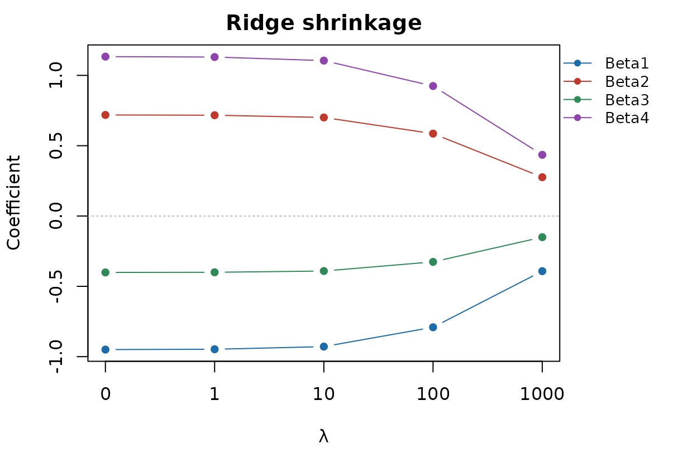
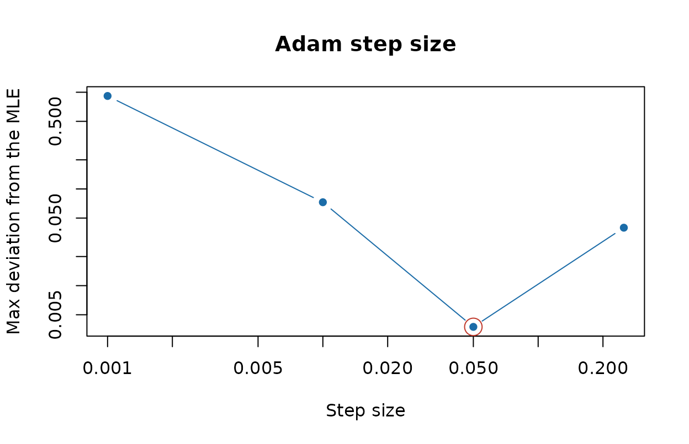

Solving Logistic Regression using Numeric Optimization
James Joseph Balamuta
Source:vignettes/logistic-regression.Rmd
logistic-regression.RmdAbstract
In this vignette, we build a logistic regression solver with
RcppEnsmallen one piece at a time. We start from the likelihood,
write the objective function as a standalone C++ file, check the
answer against glm(), add a ridge penalty, switch to
a mini-batch optimizer, and finish by moving the code into an R
package.
Overview
The linear regression vignette
minimized the residual sum of squares, a problem that also has a
closed-form solution. Logistic regression does not. There is no
closed-form formula that returns the maximum likelihood estimate, so the
coefficients have to be found by iteration, which is the problem ensmallen is
built to solve.
This vignette develops the solver step by step. Each piece of C++ shown below is a fragment of one file, and the finished file is included with the package:
system.file("examples", "logistic-regression.cpp", package = "RcppEnsmallen")The same code is also compiled into the package as
logistic_reg_lbfgs() and logistic_reg_adam().
Because compiling C++ is slow, this vignette displays the source without
rebuilding it and calls those precompiled functions to produce the
numbers. A third function built on the same objective,
logistic_reg_lbfgs_path(), records the points the optimizer
passes through and is developed in Watching an Optimizer Run with
Callbacks.
The objective function
The design matrix is with entries , the coefficient vector is , and the response is . Indices run over observations and over coefficients, so is the coefficient count throughout and fitted probabilities get their own symbol below. An intercept is a column of ones inside rather than a separate term.
The linear predictor collapses the coefficients into one number per observation:
Each response is Bernoulli with success probability , where
is the logistic function. It acts elementwise, so is the vector of fitted probabilities, one per row of . In GLM terms this is the mean of the response, the inverse link applied to the linear predictor.
Each observation contributes the Bernoulli probability , and the responses are independent, so the likelihood is their product:
Taking logs turns that product into a sum, which brings the contributions back down to a single number:
The coefficients are still hidden inside . Substituting the logistic function collapses the two logarithms into the linear predictor and a single softplus term:
Optimizers minimize, so the objective is the negative log-likelihood, also a scalar:
Without indices, the sum over observations is a product with the vector of ones , and acts elementwise on the way does:
Differentiating with respect to one coefficient at a time gives partial derivatives, each of them a sum over all observations:
Stacking those partials into a column is exactly what a transposed matrix times a vector does, which gives the compact form: the transposed design matrix times the residual between the fitted probabilities and the observed responses.
Reading the dimensions of that product,
times
,
makes the bookkeeping explicit: the sum over
collapses the observation dimension and leaves a
-vector
shaped like
itself, which is what an optimizer needs back. The C++ below mirrors
this, with beta and the gradient g both held
as X.n_cols by 1 matrices. The steps behind these
expressions are collected in the derivation at
the end of the vignette.
Unlike the linear regression case, setting this to zero does not isolate . That is why we need an optimizer.
A note on numerical stability
Translating
directly into code is the most common way a hand-written logistic
objective misbehaves. In double precision,
overflows to Inf once
exceeds roughly 710, so the objective reports Inf even
though its true value is very close to
itself:
eta <- 800
log(1 + exp(eta)) # naive
#> [1] Inf
max(eta, 0) + log1p(exp(-abs(eta))) # stable
#> [1] 800An Inf here is not usually fatal. The L-BFGS line search
fails its acceptance test on an infinite objective and shrinks the step,
so the optimizer backs off rather than crashing; a NaN is
the one that stops the search. What you lose is the information
in that region. An objective that reports Inf instead of
800 cannot tell a line search which of two bad points is less bad, so
the search is steered by a value that no longer separates them. Whether
that changes the final answer depends on the data and the starting
point.
The standard fix rewrites the expression so the exponent is never positive:
Both sides agree mathematically, but the right-hand side cannot
overflow. Armadillo provides log1p() elementwise, which is
also more accurate than log(1 + x) when x is
small.
The logistic function itself needs no special treatment. A very
negative
sends exp(-eta) to Inf and the result to 0; a
very positive
sends it to 0 and the result to 1. Both are the correct answers, so only
the softplus term needs rewriting.
// Numerically stable softplus, i.e. log(1 + exp(eta)), computed elementwise.
inline arma::vec softplus(const arma::vec& eta)
{
return arma::max(eta, arma::zeros<arma::vec>(eta.n_elem)) +
arma::log1p(arma::exp(-arma::abs(eta)));
}
// Logistic function, i.e. 1 / (1 + exp(-eta)), computed elementwise.
inline arma::vec logistic(const arma::vec& eta)
{
return 1.0 / (1.0 + arma::exp(-eta));
}Both helpers are used by the class below: softplus(eta)
computes
and logistic(eta) computes
.
A standalone implementation
Every standalone file using RcppEnsmallen opens with the
same two lines. The attribute tells Rcpp::sourceCpp() where
to find the headers.
ensmallen asks for the objective as a class with member
functions of specific names and signatures. For a differentiable
function like this one:
-
Evaluate(): the value of the objective at the given parameters. -
Gradient(): the gradient at the given parameters. -
EvaluateWithGradient(): both at once. Optional, but usually faster.
The class below writes Evaluate() and
Gradient() separately, one for each of the two formulas
above.
class LogisticRegressionFunction
{
public:
// Construct the object with the given design matrix, responses, and
// ridge penalty.
LogisticRegressionFunction(const arma::mat& X,
const arma::vec& y,
const double lambda) :
X(X), y(y), lambda(lambda) { }
// Return the objective function for model parameters beta.
// ensmallen passes beta as a p x 1 matrix, one entry per column of X.
double Evaluate(const arma::mat& beta)
{
// The n x 1 linear predictor.
const arma::vec eta = X * beta;
// One number: the loss summed over rows, plus the ridge penalty. Its
// 0.5 is what makes the penalty differentiate to lambda * beta below.
return arma::accu(softplus(eta) - y % eta) +
0.5 * lambda * arma::accu(arma::square(beta));
}
// Compute the gradient for model parameters beta.
void Gradient(const arma::mat& beta, arma::mat& g)
{
const arma::vec eta = X * beta;
// Nothing is returned; the p x 1 gradient is written into g.
g = X.t() * (logistic(eta) - y) + lambda * beta;
}
private:
// The design matrix, held by const reference so no copy is made.
const arma::mat& X;
// The responses to each data point.
const arma::vec& y;
// The ridge penalty applied to every coefficient.
const double lambda;
};Both functions compute eta and then walk over it again.
L-BFGS almost always wants the objective and the gradient at the same
point, so the work gets done twice. Adding
EvaluateWithGradient() shares one pass between them, and
ensmallen will prefer it automatically wherever it
helps:
// Compute both at once, reusing the single pass over eta.
double EvaluateWithGradient(const arma::mat& beta, arma::mat& g)
{
const arma::vec eta = X * beta;
g = X.t() * (logistic(eta) - y) + lambda * beta;
return arma::accu(softplus(eta) - y % eta) +
0.5 * lambda * arma::accu(arma::square(beta));
}Supplying all three functions is allowed and is what the included
file does. More detail is available on the ensmallen
documentation page for differentiable functions.
With the class in place, the exported function picks an optimizer and
runs it. Here that is ens::L_BFGS;
the optimizer
index lists the alternatives and the arguments each one takes.
// [[Rcpp::export]]
arma::vec logistic_reg_lbfgs(const arma::mat& X, const arma::vec& y,
const double lambda = 0.0) {
// Construct the objective function.
LogisticRegressionFunction lrf(X, y, lambda);
// Create the L-BFGS optimizer with default parameters. The ens::L_BFGS
// type can be replaced with any ensmallen optimizer that can handle
// differentiable functions.
ens::L_BFGS lbfgs;
// The objective is convex, so a deterministic start of zeros reaches the
// same optimum a random start would.
arma::mat beta(X.n_cols, 1, arma::fill::zeros);
// Run the optimization.
lbfgs.Optimize(lrf, beta);
return beta;
}The linear regression vignette starts L-BFGS from a random draw. Here we start from a vector of zeros instead, because the negative log-likelihood of a logistic regression is convex: there is a single optimum, every starting point reaches it, and starting from a fixed one makes the result reproducible. A two-dimensional slice of this objective, contoured in Watching an Optimizer Run with Callbacks, shows level sets nested around a single interior minimum.
Note: the // [[Rcpp::export]] attribute
has to appear in the .cpp file Rcpp compiles, but the class
does not have to. Moving the class into a header beside it and including
it with #include works under both sourceCpp()
and a package build. A class used by more than one optimizer usually
belongs in a header. The examples here keep each file self contained so
that one file can be read on its own.
Running it standalone
Saved as logistic-regression.cpp, the file is compiled
and loaded with a single call:
Rcpp::sourceCpp("logistic-regression.cpp")That defines logistic_reg_lbfgs() in the global
environment. The remainder of this vignette instead calls the copy
already compiled into RcppEnsmallen. The objective classes
there carry the same code as the ones shown here. What the included
files add is scaffolding around them, chiefly a block of
Rcpp::stop() argument checks at the top of each exported
function. Those checks are omitted above so the optimizer setup stays in
view.
Verifying the result
Simulating data from known parameters checks two things at once: that
the parameters are recovered, and that an established implementation
agrees. glm() maximizes exactly the likelihood we just
minimized the negative of, so the two should agree closely.
set.seed(42)
n <- 5000
beta <- c(-1, 0.7, -0.5, 1.2)
p <- length(beta)
# Design matrix with an intercept column
X <- cbind(1, matrix(rnorm(n * (p - 1)), ncol = p - 1))
# Bernoulli responses with the logistic link
y <- rbinom(n, size = 1, prob = 1 / (1 + exp(-(X %*% beta))))
coefs_ens <- logistic_reg_lbfgs(X, y)
coefs_glm <- glm.fit(X, y, family = binomial())$coefficients| Truth | ensmallen | glm.fit | |
|---|---|---|---|
| Beta1 | -1.0 | -0.9497930 | -0.9497930 |
| Beta2 | 0.7 | 0.7185603 | 0.7185603 |
| Beta3 | -0.5 | -0.4012294 | -0.4012293 |
| Beta4 | 1.2 | 1.1332602 | 1.1332602 |
The two estimates agree far more tightly than either agrees with the truth. Both are computing the same maximum likelihood estimate, and the gap to the true parameters is sampling error, not optimizer error.
Adding regularization
Maximum likelihood asks only that the coefficients fit the data in front of it. The objective from earlier is that request written as something to minimize:
Nothing in it prefers small coefficients. When a predictor separates the two classes the likelihood keeps improving as that coefficient grows, and the estimate runs off toward infinity.
Regularization adds a second term that charges for size:
The first term measures fit and the second measures the coefficients themselves, so minimizing the sum trades one against the other. The optimizer is unaffected by the change: it still minimizes a single scalar, and a differentiable contributes its own derivative to the gradient and nothing else.
Ridge regression takes to be the squared length of the coefficient vector, scaled by a chosen :
The penalty is an inner product of with itself, times , so like the fit term it is one number. Writing both out gives the penalized objective:
The first sum runs over the observations and the second over the coefficients. Each coefficient carries exactly one penalty term of its own, so differentiating adds one entry per coefficient and mixes nothing:
Both added terms are already in the class above: the
0.5 * lambda * arma::accu(arma::square(beta)) in
Evaluate() and the lambda * beta in
Gradient(). The step from one to the other is in the ridge term at the end.
Larger penalties pull the coefficients toward zero, with the
unpenalized glm.fit() estimate carried alongside as the
benchmark each column is drifting away from:
lambdas <- c(0, 1, 10, 100, 1000)
ridge_fits <- sapply(lambdas, function(l) logistic_reg_lbfgs(X, y, lambda = l))| lambda = 0 | lambda = 1 | lambda = 10 | lambda = 100 | lambda = 1000 | glm.fit | |
|---|---|---|---|---|---|---|
| Beta1 | -0.9498 | -0.9476 | -0.9287 | -0.7911 | -0.3921 | -0.9498 |
| Beta2 | 0.7186 | 0.7167 | 0.7007 | 0.5859 | 0.2760 | 0.7186 |
| Beta3 | -0.4012 | -0.4002 | -0.3912 | -0.3262 | -0.1506 | -0.4012 |
| Beta4 | 1.1333 | 1.1303 | 1.1052 | 0.9243 | 0.4351 | 1.1333 |
| Squared norm | 2.8637 | 2.8494 | 2.7280 | 1.9298 | 0.4419 | 2.8637 |
| Max deviation from MLE | 0.0000 | 0.0029 | 0.0281 | 0.2090 | 0.6981 | 0.0000 |
The same numbers read more directly as paths. Each coefficient is pulled toward zero as the penalty grows, and none of them crosses it:
cols <- c("#1b6ca8", "#c0392b", "#2e8b57", "#8e44ad")
matplot(seq_along(lambdas), t(ridge_fits), type = "b", pch = 16, lty = 1,
col = cols, xaxt = "n", xlab = expression(lambda),
ylab = "Coefficient", main = "Ridge shrinkage")
axis(1, at = seq_along(lambdas), labels = lambdas)
abline(h = 0, col = "grey70", lty = 3)
legend(par("usr")[2], par("usr")[4], xpd = NA, bty = "n", cex = 0.85,
legend = paste0("Beta", seq_len(nrow(ridge_fits))),
col = cols, lty = 1, pch = 16)
Lambda is drawn on an index axis rather than a logarithmic one because the sweep includes , which has no place on a log scale.
glm.fit() cannot be asked for the same thing. Its
arguments are
names(formals(stats::glm.fit))
#> [1] "x" "y" "weights" "start" "etastart"
#> [6] "mustart" "offset" "family" "control" "intercept"
#> [11] "singular.ok"with no penalty, ridge, or lambda among them, and
glm() has none either. There is therefore no penalized
counterpart to set against the fits for
:
the glm.fit column of the table above holds the unpenalized
estimate, carried across as the fixed reference the other columns drift
away from. It is a like-for-like benchmark only where the penalty is
switched off, at
,
where the objective is the plain negative log-likelihood that
glm.fit() minimizes:
That is the same number the unpenalized comparison printed earlier, because with it is the same fit, and it is why the table rounds that column’s deviation to zero.
Penalized GLMs in R normally come from the glmnet package rather than from a hand-written objective.
The penalty above applies to every coefficient, the intercept
included, because the function has no way of knowing which column of
X holds the intercept. Applied statistics normally leaves
the intercept unpenalized, since shrinking it pulls the fitted
probabilities toward one half rather than toward the observed base rate.
Adapting the class to skip a designated column is a small change to both
Evaluate() and Gradient().
Scaling up with separable functions
L-BFGS touches all
rows for every step. When that becomes too expensive, the mini-batch
optimizers work from a small sample of rows at a time, but they need
more from the objective than Evaluate() and
Gradient(). A separable
function must also report how many data points it holds and be able
to reorder them:
| Method | Purpose |
|---|---|
NumFunctions() |
How many data points there are |
Shuffle() |
Reorder the data between passes |
Evaluate(beta, begin, batchSize) |
Objective over one batch |
Gradient(beta, begin, g, batchSize) |
Gradient over one batch |
The batch versions take a starting row and a batch length, and return
results for the rows [begin, begin + batchSize).
Evaluate() returns the sum over that
batch, not the mean.
// The same objective in separable form, which is what the mini-batch
// optimizers require: ensmallen hands it one batch of rows at a time.
// There is no lambda here, so this is the unpenalized negative log-likelihood.
class LogisticRegressionSeparableFunction
{
public:
// Construct the object, copying the design matrix and responses.
LogisticRegressionSeparableFunction(const arma::mat& X,
const arma::vec& y) :
X(X), y(y) { }
// Return the number of separable functions, one per observation.
size_t NumFunctions() const { return X.n_rows; }
// Shuffle the order of the observations.
void Shuffle()
{
const arma::uvec ordering =
arma::shuffle(arma::regspace<arma::uvec>(0, X.n_rows - 1));
X = X.rows(ordering);
y = y.elem(ordering);
}
// Return the objective summed over the batch [begin, begin + batchSize).
// Note this is a sum, not a mean; ensmallen expects the former.
double Evaluate(const arma::mat& beta,
const size_t begin,
const size_t batchSize)
{
// begin and batchSize index rows of X, so last is the final row used.
const size_t last = begin + batchSize - 1;
// batchSize x 1 here, where the full-batch class had n x 1.
const arma::vec eta = X.rows(begin, last) * beta;
const arma::vec yBatch = y.subvec(begin, last);
return arma::accu(softplus(eta) - yBatch % eta);
}
// Compute the gradient over the batch [begin, begin + batchSize).
void Gradient(const arma::mat& beta,
const size_t begin,
arma::mat& g,
const size_t batchSize)
{
const size_t last = begin + batchSize - 1;
const arma::mat XBatch = X.rows(begin, last);
const arma::vec yBatch = y.subvec(begin, last);
// Still p x 1: a batch shortens the sum, not the parameter vector.
g = XBatch.t() * (logistic(XBatch * beta) - yBatch);
}
private:
// The design matrix, held by value so that Shuffle() can reorder it.
arma::mat X;
// The responses to each data point, likewise held by value.
arma::vec y;
};There is one structural difference from the full-batch class.
X and y are stored by value
rather than as const references, because
Shuffle() rearranges them in place and cannot do that
through a const reference.
Running Adam on this class looks much like running L-BFGS, with two details that catch people out.
// [[Rcpp::export]]
arma::vec logistic_reg_adam(const arma::mat& X, const arma::vec& y,
const size_t batch_size = 32,
const size_t max_epochs = 50,
const double step_size = 0.05,
const bool verbose = false) {
LogisticRegressionSeparableFunction lrf(X, y);
// ensmallen counts iterations in data points visited, so one epoch is
// nrow(X) iterations.
const size_t max_iterations = max_epochs * X.n_rows;
// Arguments are: stepSize, batchSize, beta1, beta2, eps, maxIterations,
// tolerance, and whether to shuffle between epochs.
ens::Adam optimizer(step_size, batch_size, 0.9, 0.999, 1e-8,
max_iterations, 1e-8, true);
arma::mat beta(X.n_cols, 1, arma::fill::zeros);
// Callbacks are passed as trailing arguments to Optimize(). PrintLoss
// writes to arma::get_cout_stream(), which RcppArmadillo maps to
// Rcpp::Rcout, so the output is safe to emit from an R package.
if (verbose) {
optimizer.Optimize(lrf, beta, ens::PrintLoss());
} else {
optimizer.Optimize(lrf, beta);
}
return beta;
}MaxIterations() counts data points, not epochs or
batches. Passing 50 when you meant fifty passes over the data would stop
the optimizer after fifty observations. One epoch is
nrow(X) iterations, which is why max_epochs is
multiplied out above.
Since ensmallen 3.10, the SGD family divides the step
size by the batch size. The intent is that batch size and step size can
be tuned independently, but it means a step size carried over from
ensmallen 2 is effectively batchSize times
smaller than it used to be. Defining
ENS_OLD_SEPARABLE_STEP_BEHAVIOR before including the
headers restores the old behavior.
ens::Adam defaults to a step size of 0.001, which
predates the change. With a batch size of 32 that leaves an effective
step of about 3e-5, and the optimizer stalls far short of
the optimum.
The sweep changes the step size and nothing else. Batch size and
epoch count stay at the defaults logistic_reg_adam()
declares, and every call starts from the same vector of zeros:
set.seed(2024)
step_sizes <- c(0.001, 0.01, 0.05, 0.25)
adam_fits <- sapply(step_sizes,
function(s) logistic_reg_adam(X, y, step_size = s))| step = 0.001 | step = 0.01 | step = 0.05 | step = 0.25 | glm.fit | |
|---|---|---|---|---|---|
| Beta1 | -0.2103 | -0.8966 | -0.9485 | -0.9848 | -0.9498 |
| Beta2 | 0.1826 | 0.6743 | 0.7148 | 0.6788 | 0.7186 |
| Beta3 | -0.1186 | -0.3758 | -0.4036 | -0.3911 | -0.4012 |
| Beta4 | 0.2181 | 1.0604 | 1.1353 | 1.1525 | 1.1333 |
| Max deviation from MLE | 0.9152 | 0.0729 | 0.0037 | 0.0397 | 0.0000 |
Plotting the deviation against the step size shows both failure modes at once:
dev_from_mle <- apply(adam_fits, 2, function(b) max(abs(b - coefs_glm)))
plot(step_sizes, dev_from_mle, type = "b", pch = 16, log = "xy",
col = "#1b6ca8", xlab = "Step size",
ylab = "Max deviation from the MLE", main = "Adam step size")
best <- which.min(dev_from_mle)
points(step_sizes[best], dev_from_mle[best], pch = 1, cex = 2.2,
col = "#c0392b")
Too small a step stalls short of the optimum and too large a one overshoots it.
This is why logistic_reg_adam() defaults to
step_size = 0.05 rather than adopting
ens::Adam’s own default.
With a workable step size, Adam lands close to the L-BFGS answer while only ever looking at 32 rows at a time:
| Truth | Adam | L-BFGS | |
|---|---|---|---|
| Beta1 | -1.0 | -0.9495 | -0.9498 |
| Beta2 | 0.7 | 0.7242 | 0.7186 |
| Beta3 | -0.5 | -0.4028 | -0.4012 |
| Beta4 | 1.2 | 1.1342 | 1.1333 |
The Adam column shifts slightly from call to call unless a seed is
fixed. Shuffle() draws on Armadillo’s random number
generator, and RcppArmadillo routes that onto R’s own
stream, so set.seed() makes these results every bit as
reproducible as the L-BFGS ones:
set.seed(2024); first <- logistic_reg_adam(X, y)
set.seed(2024); second <- logistic_reg_adam(X, y)
identical(first, second)
#> [1] TRUEThe flip side is that every call consumes random numbers from R’s
stream, so it advances any rnorm() or runif()
draws that follow it.
The verbose argument in the function above switches on a
callback that prints the loss after each pass over the data, which turns
a run that stopped short of the optimum into something visible. Watching an Optimizer Run with
Callbacks runs that branch, reads what it prints, and goes on to
write a callback that records the points L-BFGS visits.
Moving this into an R package
Everything above works from a loose .cpp file, but
sourceCpp() recompiles on every fresh session. Moving the
code into a package compiles it once at install time, gives the
functions manual pages, and lets other packages depend on them.
Three changes carry it across:
-
Move the file into
src/. The// [[Rcpp::depends(RcppEnsmallen)]]attribute is no longer needed, sinceLinkingToinDESCRIPTIONreplaces it. Keep the#include <RcppEnsmallen.h>. This package splits the file in three, one exported function each, so each part carries its own copy of the helpers inside an anonymousnamespace { }. The third of them holds the callback the other vignette develops, and keeps its copy of the objective class in there too, since the L-BFGS file already defines a class of that name at namespace scope. -
Declare the dependency and build flags.
DESCRIPTIONneeds aLinkingToentry, andsrc/needs aMakevarsand aMakevars.win. The package usage vignette gives the exact contents. -
Regenerate the bindings. Running
Rcpp::compileAttributes()writes the.Call()wrappers intoR/RcppExports.Randsrc/RcppExports.cpp. Any roxygen comments written above the// [[Rcpp::export]]attribute are carried intoR/RcppExports.R, soroxygen2::roxygenise()will then produce the manual page and theNAMESPACEexport.
Laid out as a tree, and trimmed to the files the move actually touches, that is:
RcppEnsmallen/
|-- DESCRIPTION # holds the LinkingTo entry from step 2
|-- NAMESPACE # export() and useDynLib(); roxygen2 writes it
|-- R/
| `-- RcppExports.R # generated R wrappers around .Call()
|-- src/
| |-- example-logistic-regression-lbfgs.cpp # the objective class and logistic_reg_lbfgs()
| |-- example-logistic-regression-adam.cpp # the separable class and logistic_reg_adam()
| |-- example-logistic-regression-path.cpp # the callback, from the callbacks vignette
| |-- Makevars # compiler and linker flags, Unix-alikes
| |-- Makevars.win # the same flags for Windows
| `-- RcppExports.cpp # generated C++ registration layer
|-- man/
| |-- logistic_reg_lbfgs.Rd # generated from the roxygen comments in src/
| |-- logistic_reg_adam.Rd
| `-- logistic_reg_lbfgs_path.Rd
|-- inst/
| `-- examples/
| `-- logistic-regression.cpp # the standalone file, kept for sourceCpp()
`-- vignettes/
`-- logistic-regression.Rmd # this documentStep 1 accounts for the three files under src/, and step
2 for DESCRIPTION together with the pair of
Makevars files beside them. Step 3 accounts for everything
else: src/RcppExports.cpp, R/RcppExports.R,
the pages in man/, and NAMESPACE are all
generated, so the only hand-written C++ in the tree is the file you
moved.
That is the whole difference between the standalone file and what
this package provides. To compare them directly, the standalone version
is at
system.file("examples", "logistic-regression.cpp", package = "RcppEnsmallen")
and the package version is split across
src/example-logistic-regression-lbfgs.cpp,
src/example-logistic-regression-adam.cpp and
src/example-logistic-regression-path.cpp in the package
sources.
Derivation
Everything above was asserted rather than shown; here is the algebra in one place. Throughout, , and the vector of fitted probabilities is with entries . The index runs over the observations and over the coefficients, and is a column vector shaped like . Results that have a matrix form are given both ways, with the shape of each factor carried as a subscript, so that marks a matrix. The index form shows what is being summed; the matrix form shows what shape comes out.
From the Bernoulli likelihood to the objective
Independent Bernoulli responses give the likelihood
Taking logs turns the product into a sum, and collecting the terms leaves a log-odds and an offset:
The logistic function is built so that both pieces simplify. From and we get
Substituting both gives the log-likelihood used at the start,
and the objective is .
The matrix form stated earlier is the same expression with every shape carried along:
Both products run the length of the
observations and return one number, which is the
on the left. In the C++ that
is arma::accu(), which sums
softplus(eta) - y % eta in a single pass rather than
forming the two products separately.
The gradient
Only one derivative is needed:
Observation contributes to and touches no other , so
The chain rule carries that back to the coefficients. Since involves only through the single term , we have , and every observation contributes to every coefficient:
A sum over the first index of with the second left free is the definition of a transposed product: for any , the -th entry of is . Taking and collecting all entries,
The transpose is where the sum over observations went.
The same two steps in matrix form carry the shapes along. Write for the column of partials , and for where the two need distinguishing. The derivative of the linear predictor with respect to the coefficients is the design matrix itself. The derivative of with respect to the linear predictor is the residual between the fitted probabilities and the observed responses:
The chain rule composes the two, transposing the first factor so that the index they share is the one summed over:
The
sitting on the inside of that product is the observation index, and it
is absent from the result:
times
leaves the
that Gradient() writes into g.
The ridge term
The penalty
gives each coefficient exactly one term of its own, so
The one half in the penalty exists to cancel the 2 brought down by
the square, which is why Evaluate() carries a
0.5 that Gradient() does not.
Annotating the shapes shows the penalty collapsing to a number while its gradient keeps the shape of :
Both terms of
are therefore
,
which is what lets Gradient() add
lambda * beta to the vector coming out of
X.t() * (logistic(eta) - y) entry by entry.
The softplus identity
The stable rewrite used earlier,
is an exact identity rather than an approximation. The sign of decides which value takes and which sign strips, so the two cases are checked separately.
For , and , so the right-hand side is
For , and , so the right-hand side is with nothing to do.
Both branches return the left-hand side. The difference is what a computer is asked to evaluate. On the right the exponent is , so lands in and cannot overflow, while the term carries the large part of the answer exactly.